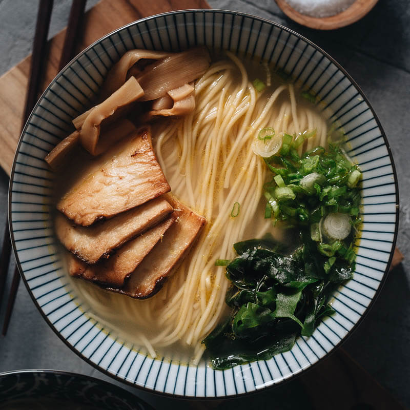

Shio

Description
Shio is a salty ramen packed with umami.
Ingredients
350 mL
All Purpose Chintan
30 mL
White Wine Chicken Shio Tare
15 mL
All Purpose Negi (Scallion) Oil
135g Tokyo Style Noodle
Steps
While cooking the noodles, add the tare, aroma oil, and soup to the serving bowl.
Strain the noodles.
Fold the noodles into the soup.
Add any toppings.